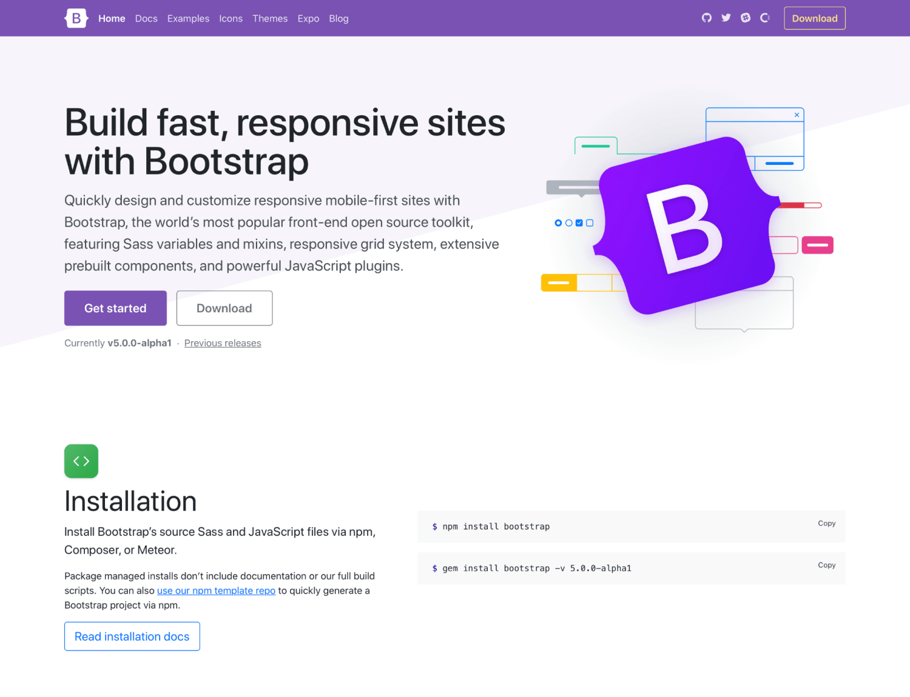
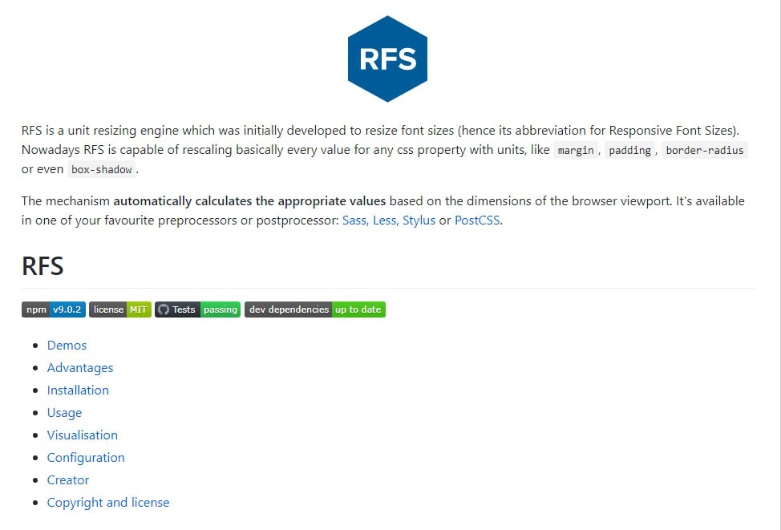

BOOTSTRAP 5
Bootstrap 5 was the latest version of the popular front-end framework Bootstrap. Bootstrap is widely used for building responsive and mobile-first websites quickly and efficiently.
Introduction
Bootstrap is a free and open-source collection of CSS and JavaScript/jQuery code used for creating dynamic websites layout and web applications. Bootstrap is one of the most popular front-end frameworks which has really a nice set of predefined CSS codes. Bootstrap uses different types of classes to make responsive websites. Bootstrap 5 was officially released on 16 June 2020 after several months of redefining its features.
Bootstrap is a framework that is suitable for mobile-friendly web development. it means the code and the template available on bootstrap are applicable to various screen sizes. It is responsive for every screen size. The framework is free and can be used in 2 ways that are either by downloading the zip files and including libraries/modules of bootstrap in the project or directly including the URL of bootstrap and using the online version.
Some important changes in Bootstrap 5:
1.Updated official documentation: The docs homepage of v4.5.0 has an updated look and there are some improvements in the rest of the official docs too. Bootstrap docs have some nice padding around the corners to make it more readable and highlight its content.

- jQuery is removed completely: Earlier, bootstrap components like modals, tooltips, popovers etc, were dependent on jQuery and popper.js. After the release of the alpha 5 version, Bootstrap no longer depends on jQuery. While jQuery has been used in Bootstrap for more than 8 years, many developers had this issue that jQuery brought uneven access to complex JavaScript behaviors to them. The whole process made possible by their JavaScript maintainer https://github.com/johann-s
- Switch to Vanilla JavaScript: JavaScript is the programming language of the web. Most of the modern websites are powered by JavaScript and all modern web browsers on phones, tablets, consoles, desktops include JavaScript Interpreters. One of the major reasons of dropping jQuery was to redefine the framework completely on modern JavaScript standards.
- Dropped support of Internet Explorer 10 and 11: Internet Explorer was released in 1995 by Microsoft. As of today, Internet Explorer is no longer relevant with popular browsers like Chrome and Microsoft Edge which are built on chromium. When bootstrap decided to refine their framework purely on Vanilla JavaScript, they dropped the support of IE which is not compatible with modern JavaScript standards.
- Responsive Fonts: Bootstrap has introduced responsive font sizes which will automatically resize the typography element according to the viewport size through the RFS Engine. RFS engine was developed to resize font sizes. It provides the facility to resize the CSS properties like “margin”, “padding”, “border-radius”, “box-shadow” by units.

- Removed Cards: new grid system of Bootstrap provides more responsive control of the layout. Hence, they removed unnecessary extra classes which can be designed by the new grid layout. The older versions of Bootstrap still support card system.